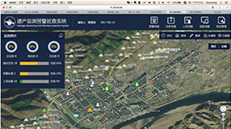
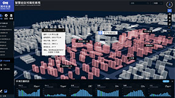
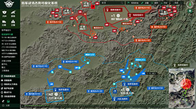
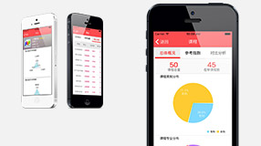

其他案例
运营管理中心城市运行大数据平台
某城市实时在线交易大数据平台
山西省某消防局指挥消防系统

遗产监测预警巡查系统

清河街道毛纺北智慧社区系统

某军事战场态势可视化系统
中国科协技术协会地图

"智慧线"在线教育大数据平台
相数科技同摩拜科技共同研发并推出了“魔方”大数据人工智能分析平台。 集合汇总摩拜海量大数据，保证百万辆级智能共享单车的科学、高效、安全运营。精确掌握车辆需求，优化运营策略，让每一辆摩拜单车出现在最需要它的地方；并利用用户及用户骑行产生的海量数据结合城市地理信息数据，在骑行模拟、供需预测、停放预测和地理围栏四大人工智能领域发挥重要作用。
经数据挖掘和深度分析，为城市规划及管理提供科学、有价值的数据参考。
“马赛马拉”大数据智能运营平台是为电斑马智能科技量身定制的基于大数据+人工智能的运营系统。从数据资产有效维护和数据潜在价值挖掘出发，以大数据+人工智能技术为核心，着力为电斑马电动车租赁业务及充电业务的决策、管理、运营、运维、商务等各项业务提供全方位的信息服务和技术支撑。并通过内部运营数据与外部人口、商业、气象等数据的充分融合，逐步建立基于人工智能的分析预测模型，对电斑马网点选址、用车需求等重要指标进行预测，建立高效、实用的精细管理和科学决策能力。
腾讯自动驾驶云数据平台是为自动驾驶相关研究、应用提供基础数据、算法模型、测试仿真环境支持的开放技术平台。
近期主要为腾讯公司内部自动驾驶相关的技术团队提供流程化、自动化的支持，后续将面向自动驾驶相关的企业和公众开放技术服务能力，成为面向全球的自动驾驶开放云平台。
中国联通北京一号卫星地面站接收站移动目标定位与追踪系统是基于遥感、定位、移动通讯、地理信息结合大数据技术的移动目标定位与监测、预警、追踪的大数据平台。
拥有数千亿行数据集的实时查询、计算与动态渲染能力，结合时间维度控制，实现了对空情、海情、陆情的全方位监测及对飞机、轮船、汽车的运行轨迹动态可视化管理，进行预警预测及反向追踪。
构建能够融合多维、动态、多元的信息要素，协同挖掘分析线上、线下地缘环境各类数据，实现“一带一路”沿线国家多尺度的地缘环境大数据获取、处理、存储、管理、可视化分析预测等服务体系。具备对在地理、空间上分散的人、设施、环境、事件、国家等进行大规模实时关联和因果分析的能力，满足政府机关、军队等地缘环境分析与决策需求。
白塔寺社区体检平台利用布设在白塔寺历史街区的CityGrid传感器，实时监控社区内的动态数据，感知街道行为与气候环境的变化。CityEye城市体检平台针对北京市城市功能落实中产业转型，人口疏解，公共设施，交通优化，环境治理等重要功能，利用多源数据构建“城市体检”多维可视化评估体系，为北京城市管理指标对比，规划落实，效用评估工作提供数据支撑和决策依据。
实时监测与预报预测相结合的针对台风监测与灾害预警的大数据可视化系统，基于物联网、云计算等技术建立灾情监视监测网络，充分利用图形计算单元的计算能力，在三维地理空间的基础上贯穿时间维度对台风灾害相关的气象因素、灾害损毁、洪水淹没进行空间展示和动态推演。